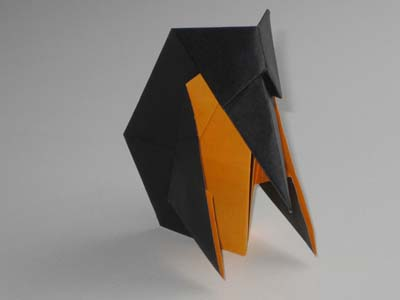
Origami Penguin Step 1: Start with a piece of origami paper that is black on one (1) side. The other side can be white or orange.
Fold the paper in half with the non-black side facing out. Then fold and unfold along the dotted line as shown below right:
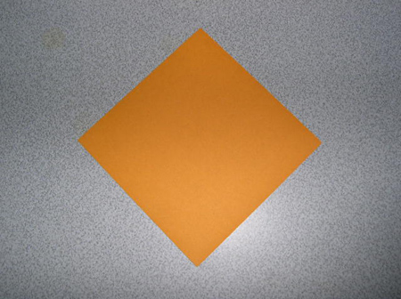
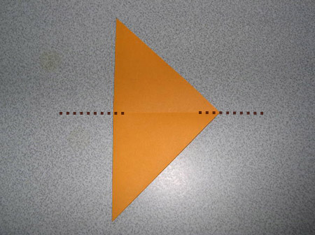
Origami Penguin Step 2: Now make a squash fold by carefully following the sequence of the next four (4) pictures: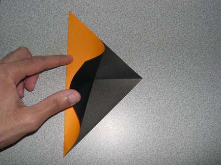
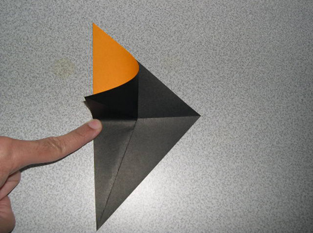
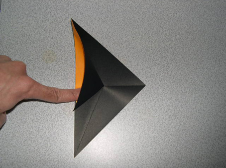
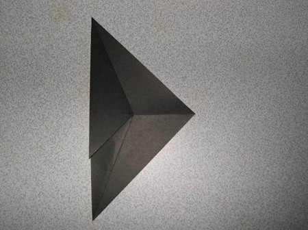
Origami Penguin Step 3: Now flip the model over, and repeat those last four (4) steps on the other side. It will then look like the photo below left. Follow the next four (4) photos to make another squash fold:
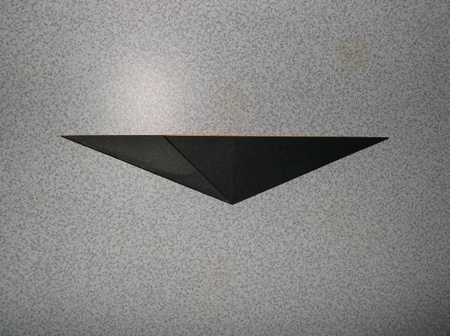
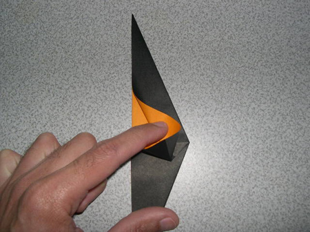
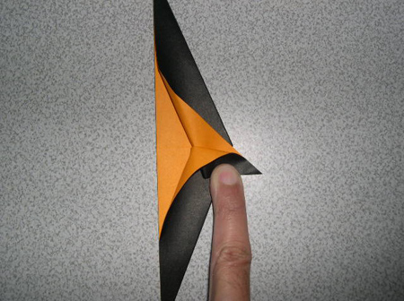
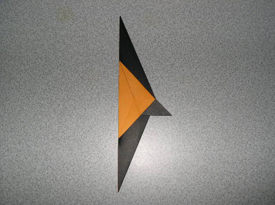
Origami Penguin Step 4: Now flip the piece over and repeat that squash fold on the backside. Then unfold the model along the centerline, moving point A upwards.
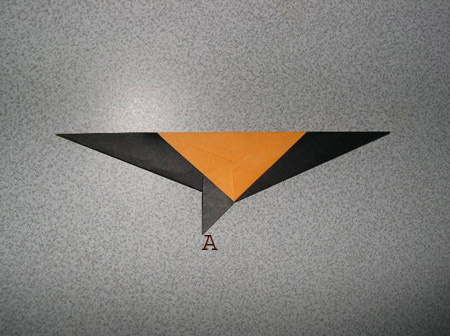
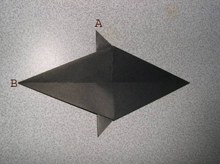
Origami Penguin Step 5: Now fold point B over as shown, then re-fold the model in half lengthwise as shown.
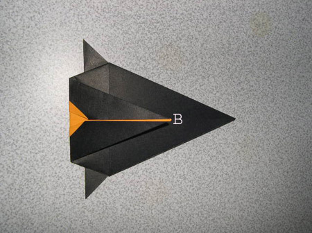
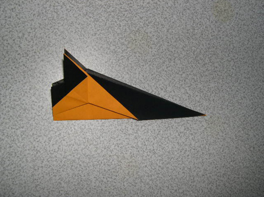
Origami Penguin Step 6: Fold the flipper of the origami penguin towards the front of the body as shown in the two (2) photos below:
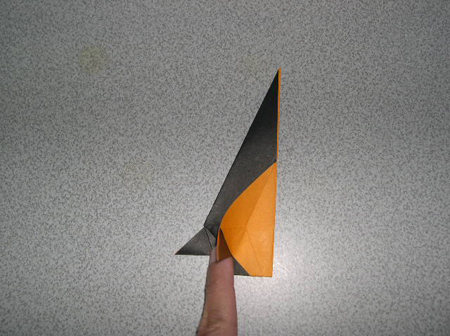
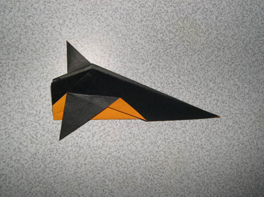
Origami Penguin Step 7: Next fold the other flipper (below left). We're getting close! Just need to make the head of the penguin. Crease the head along the dotted line shown, then make a reverse outside fold. It will be easier to do this if you unfold the body of the penguin while folding the head down. The result should be like the photo below right:
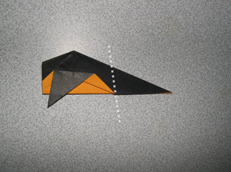
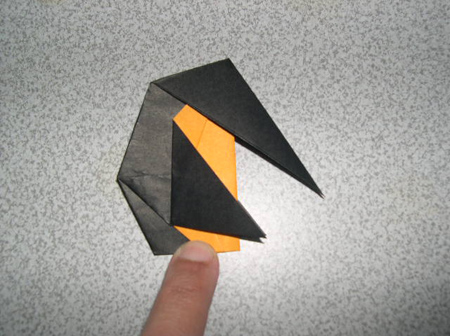
Origami Penguin Step 8: Now do two (2) reverse folds to make the beak of the penguin:
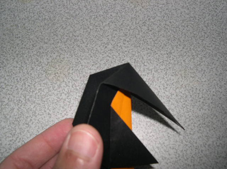
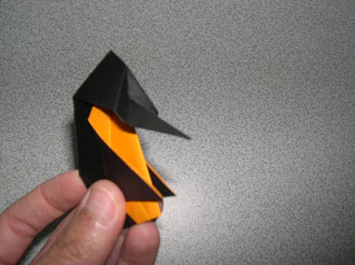
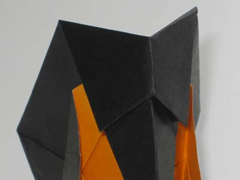
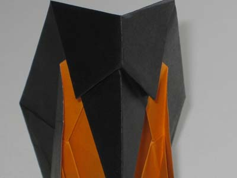
Origami Penguin Step 9: And there you have it! An Antartic-dwelling origami penguin!
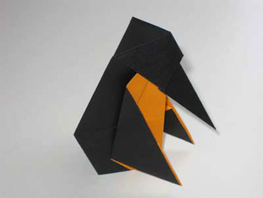
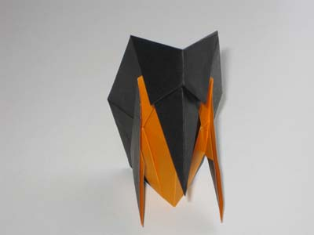
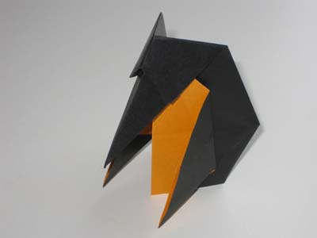
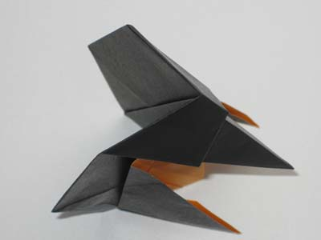